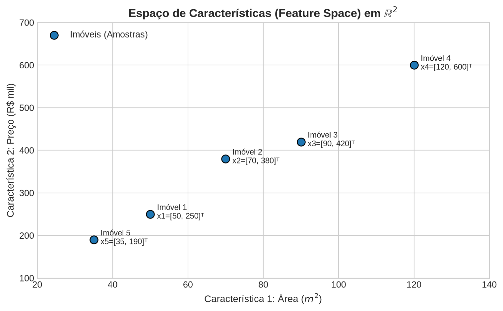
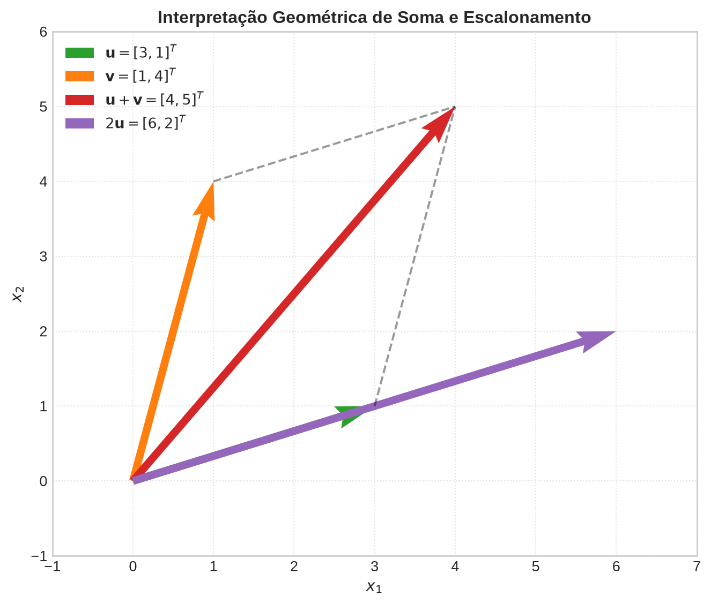
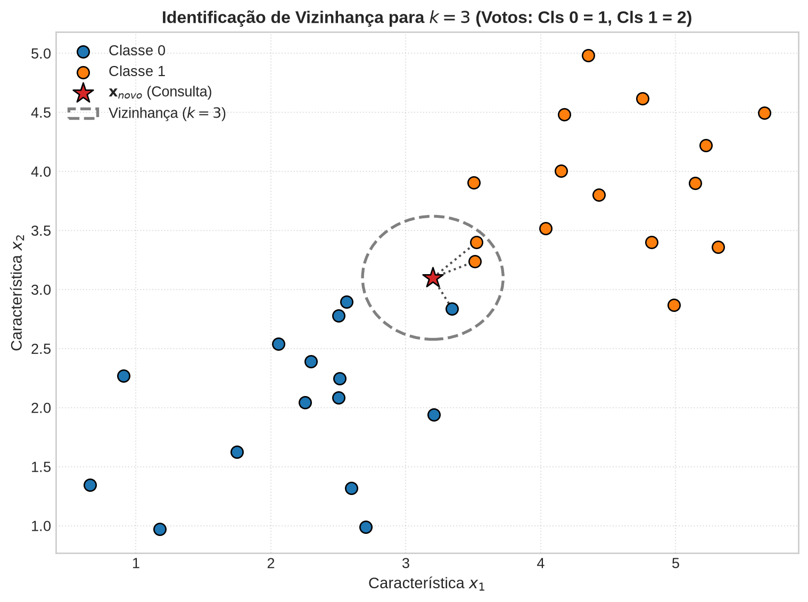
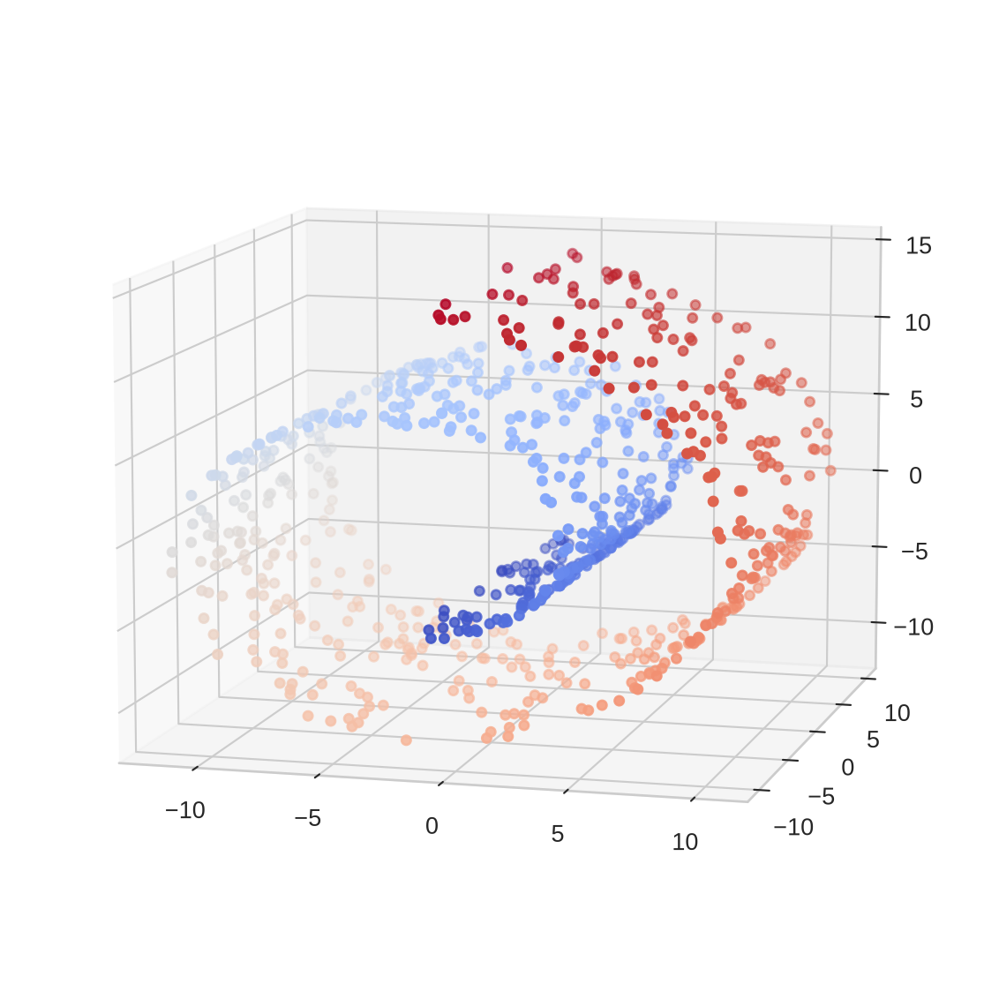
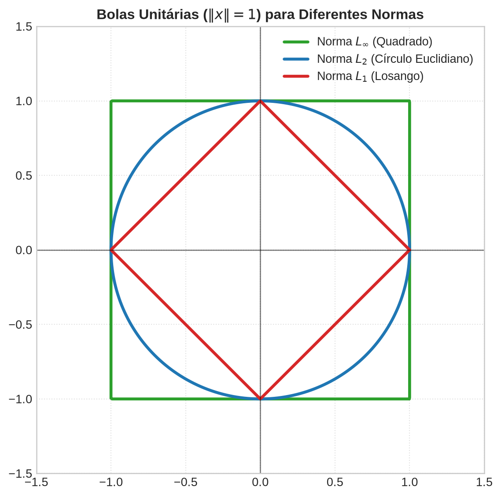
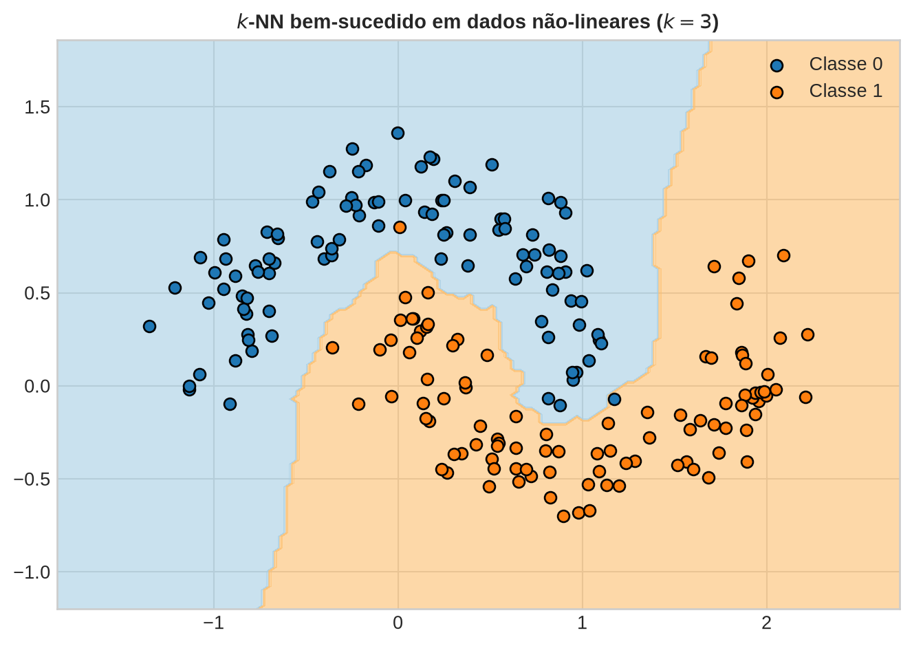

Álgebra Linear e Otimização para Aprendizado de Máquina
\[\mathbf{x} = \begin{bmatrix} x_1 \\ x_2 \\ \vdots \\ x_d \end{bmatrix}\]


Conjunto de \(k\) Vizinhos: \(\mathcal{N}_k(\mathbf{x}_{\text{novo}}) \subset \mathcal{D}\) contendo as \(k\) amostras com menores \(d(\mathbf{x}_{\text{novo}}, \mathbf{x}_i)\).
Classificação (Votação Majoritária): \[\hat{y}_{\text{novo}} = \arg\max_{c} \sum_{i \in \mathcal{N}_k} \mathbb{I}(y_i = c)\]
Regressão (Média Aritmética): \[\hat{y}_{\text{novo}} = \frac{1}{k} \sum_{i \in \mathcal{N}_k} y_i\]



Vamos demonstrar formalmente que \(d_{\cos}\) satisfaz os axiomas de não-negatividade, simetria e desigualdade triangular.
1. Não-negatividade: Como \(-1 \leq \cos(\theta) \leq 1\), temos que \(0 \leq d_{\cos}(x, y) \leq 2\).
2. Simetria: Decorre diretamente da simetria do produto interno: \(\langle x, y \rangle = \langle y, x \rangle\).
3. Desigualdade Triangular: Seja a normalização de qualquer vetor não nulo definida como o vetor unitário correspondente: \[\hat{x} = \frac{x}{\|x\|_2}, \quad \hat{y} = \frac{y}{\|y\|_2}, \quad \hat{z} = \frac{z}{\|z\|_2}\]
A distância do cosseno é proporcional à norma Euclidiana dos vetores normalizados:
\[\|\hat{x} - \hat{y}\|_2^2 = \|\hat{x}\|_2^2 + \|\hat{y}\|_2^2 - 2\langle \hat{x}, \hat{y} \rangle = \] \[= 1 + 1 - 2\cos(\theta_{xy}) = 2(1 - \cos(\theta_{xy})) = 2 d_{\cos}(x, y)\]
Como a norma Euclidiana \(\|\cdot\|_2\) satisfaz a desigualdade triangular ordinária no espaço vetorial: \[\|\hat{x} - \hat{z}\|_2 \leq \|\hat{x} - \hat{y}\|_2 + \|\hat{y} - \hat{z}\|_2\]
Substituindo a relação com a distância do cosseno em termos de raízes quadradas: \[\sqrt{2 d_{\cos}(x, z)} \leq \sqrt{2 d_{\cos}(x, y)} + \sqrt{2 d_{\cos}(y, z)}\]
Ao elevarmos ambos os lados ao quadrado, concluímos que a restrição de distância angular respeita o limite triangular, provando que \(d_{\cos}\) é formalmente uma métrica.

A Arquitetura: Documentos e perguntas são mapeados como vetores densos em um espaço latente de alta dimensão.
O Motor de Busca: A etapa de Retrieval (Recuperação) do RAG é um \(k\)-NN em larga escala, utilizando similaridade de cosseno ou distâncias normadas.
Síntese: Toda a teoria de espaços vetoriais, normas e métricas que estudamos hoje é o motor matemático por trás dos sistemas modernos de IA generativa baseados em conhecimento externo.
UNICAMP — Instituto de Computação